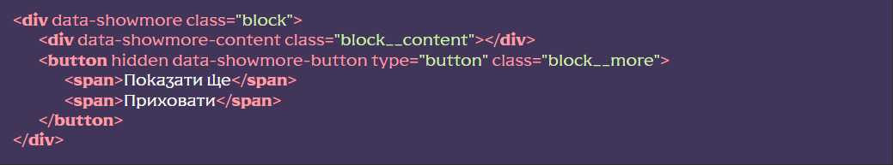

Підключення функціоналу
[HTML] У потрібному місці викликати сніпет showmore (класи замінити на потрібні). Або вручну створити структуру де для оболонки доданий атрибут data-showmore, для дочірнього елемента data-showmore-content і кнопки data-showmore-button. Кнопку спочатку потрібно приховати додавши атрибут hidden і додати два теги <span> з текстом показу та приховування контенту:

[JS] У файлі js/app.js розкоментувати рядок
flsFunctions.showMore();
[SCSS] Розкоментувати рядок
@import “base/showmore”; у файлі src/scss/base.scss —
це підключить базові стилі, відредагувати під свої потреби
Використання функціоналу
До елемента з атрибутом data-showmore-content додаємо текст та інший контент, або якщо це список (UL/OL) елементи списку (LI).
Залежно від того, який контент використовується (текст або елементи списку), вказуємо значення для атрибута data-showmore :- size - обмеження по висоті блоку (за замовчуванням)
- items – обмеження кількості виведених елементів списку
Залежно від того, який тип обрано, вказуємо значення для атрибуту data-showmore-content :
- Висота блоку у пікселях (число без px, за замовчуванням 150)
- Кількість виведених елементів списку (число, за замовчуванням 3)
Якщо контент буде меншим, ніж зазначене обмеження, кнопка “Показати ще” не буде показана. В іншому випадку, контент обмежиться за висотою або за кількістю елементів і при натисканні на кнопку буде показаний повністю, також, до елемента з атрибутом data-showmore додасться клас _showmore-active (перший спан в кнопці буде прихований, а другий показаний). Повторний клік поверне обмеження.
Є можливість керувати швидкістю розгортання контенту, для цього слід вказати значення атрибуту data-showmore-button у мілісекундах (за замовчуванням 500):
Увімкнення функціоналу на певній ширині екрану
Для того щоб використовувати функціонал на певній ширині екрана, до об’єкта з атрибутом data-showmore додаємо атрибут data-showmore-media де, через кому, вказуємо потрібну ширину, а також тип:
- max (за замовчуванням) – функціонал увімкнеться на ширині меншій ніж зазначена
- min – функціонал увімкнеться на ширині більшій ніж зазначена
Розташування та додаткові дані
Функціонал знаходиться у js/files/functions.js. Назва функціі showMore()